Demonstrate NICE/VNICE Instruction Acceleration of the Nuclei Model through Profiling¶
Nuclei Model is supported on both Windows and Linux. All tests in this document were performed with the Windows version of Nuclei Studio (>= 2025.10).
Background¶
Nuclei Model Profiling¶
In An Example to Demonstrate the Use of Profiling and Code Coverage in Nuclei Studio, two run modes — qemu and on-board testing — were used to show how to import a specific program into the IDE for Profiling. Part of this document introduces how to perform Profiling on the Nuclei Model.
Advantages of Nuclei Model Profiling:
- No development board or other hardware is required
- The model has a built-in gprof feature, so Profiling files can be generated without a Profiling library or the
gcc -pgoption - It uses instruction-level sampling, enabling instruction-level Profiling analysis
The relevant chapters of NucleiStudio_User_Guide.pdf already describe in detail how to configure simulation performance analysis for the Nuclei Model. This document demonstrates its practical application with an example.
NICE/VNICE Custom Instruction Acceleration¶
NICE/VNICE allows users to extend custom instructions based on their own applications, extending Nuclei's standard processor cores into domain-specific processors. For the detailed encoding rules of NICE, refer to the NICE Introduction section in Nuclei_RISC-V_ISA_Spec.pdf. NICE is suitable for custom instructions that do not use RISC-V Vector, while VNICE is suitable for custom instructions that do use RISC-V Vector.
demo_nice/demo_vnice introduce how Nuclei's NICE/VNICE demo applications are compiled and run. This document will adapt a more common AES encryption/decryption example, focusing on how to replace hotspot functions with NICE/VNICE instructions and how to implement NICE/VNICE instructions in the model, and then use Nuclei Studio's Profiling feature to analyze program performance before and after the replacement.
Solution¶
Environment Preparation¶
Nuclei Studio: NucleiStudio 2025.10 Windows
Model Profiling¶
There are two ways to create a project:
- Method 1: Use the
demo_niceordemo_vnicetemplate in Nuclei Studio to port and adapt your own NICE/VNICE program - Method 2: Import your own project into Nuclei Studio, then add code such as the NICE inline assembly header file and NICE CSR enabling
This document uses the first method to create the project. Since this demo uses VNICE instructions, a demo_vnice project is created, and then the AES encryption/decryption program is ported into it.
step1: Create a new demo_vnice project¶
File->New->New Nuclei RISC-V C/C++ Project, select Nuclei FPGA Evalution Board->sdk-nuclei_sdk @0.6.0
Note: Nuclei SDK version 0.6.0 or later is required
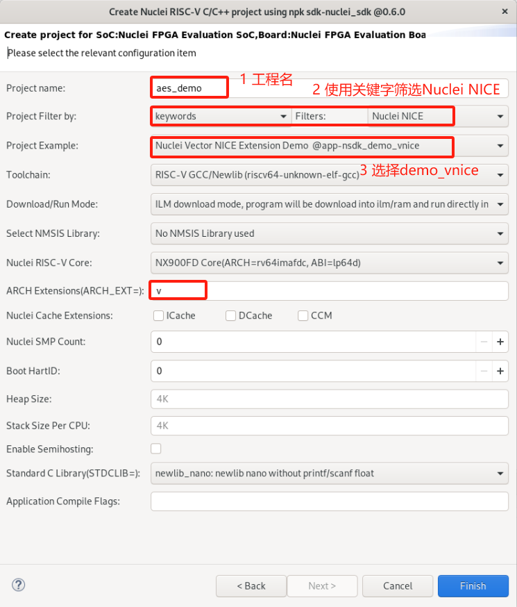
step2: Port the aes_demo bare-metal test case based on the demo_vnice project¶
When porting aes_demo, keep the insn.h inline assembly header file framework from demo_vnice so that custom NICE/VNICE instructions can be added later, and keep the CSR enabling code in main.c that runs before NICE/VNICE instructions are executed:
__RV_CSR_SET(CSR_MSTATUS, MSTATUS_XS);
The remaining original application test cases in the demo_vnice project can be deleted and replaced with the aes_demo test case, resulting in the following directory structure. Make sure it compiles successfully.
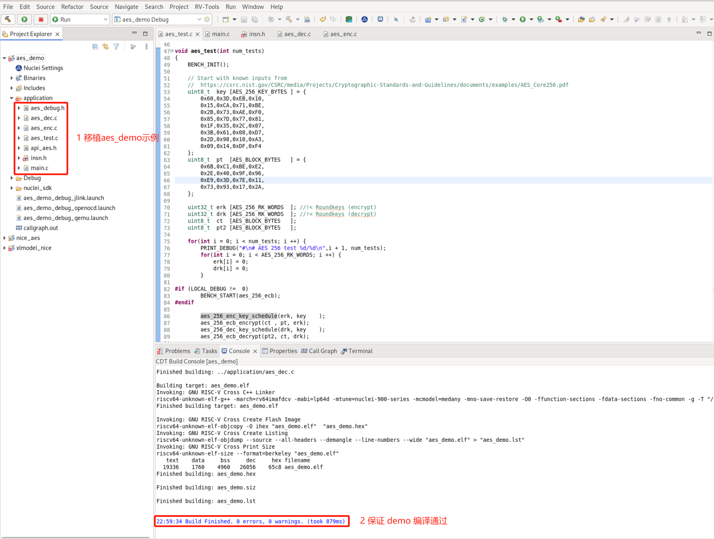
You can download our pre-ported AES encryption/decryption demo: Download link for the AES project before optimization
After downloading the zip package, you can import it directly into Nuclei Studio and run it (import steps: File->Import->Existing Projects into Workspace->Next->Select archive file->select the zip archive->next).
step3: Simulate the program with the model¶
First, enable LOCAL_DEBUG in aes_debug.h to prepare for measuring the overall cycle count of the AES algorithm.
To simulate the program with the Model, configure the GDB Nuclei Model riscv Debugging configuration in Nuclei Studio as follows:
- Open
Run Configurationsfrom theRunoption in the Nuclei Studio main menu bar - Select the
GDB Nuclei Model riscv Debuggingconfiguration, right-click and selectNew Configuration; a Model configuration page named after the project is automatically generated, and the launch bar is updated accordingly - In the
Maintab on the right, clickSearch Project...and select the compiled elf file - In the
Debuggertab on the right, selectBrowseand locate the default path of the Nuclei Model executable:NucleiStudio/toolchain/nucleimodel/bin/xl_cpumodel.exe -
In the
Debuggertab on the right, complete the model run configuration underNuclei Setup:Nuclei RISC-V CoreandOther Extensionsmust be consistent with theCoreandOther extensionssettings inNuclei Settings. WhenOther Extensionsis empty, this parameter is not passed.Enable Nuclei Model RVTracemeans rvtrace is generated at runtime. Add--gprof=1toMore optionsto enable the Profiling feature. Then clickApplyandRun, and the model starts running the program.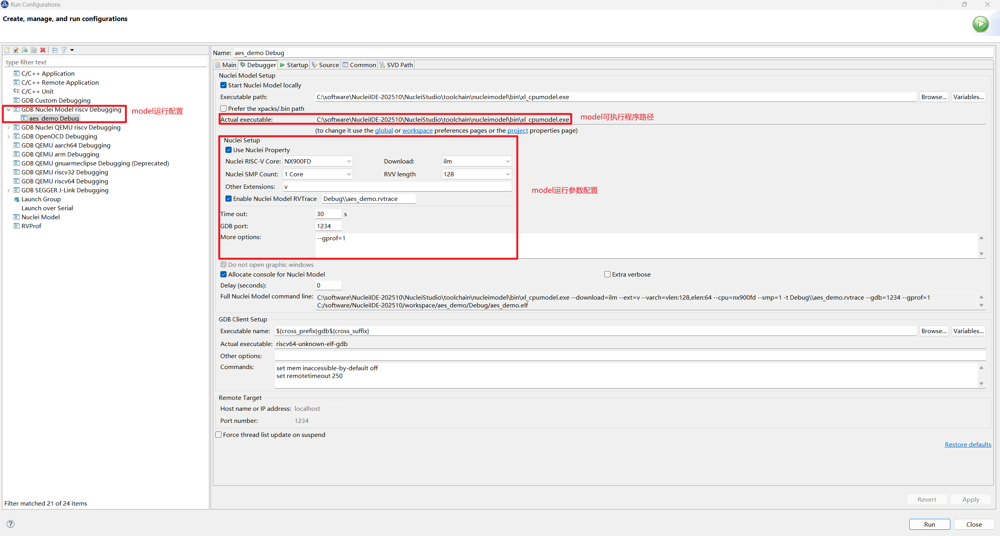
Nuclei Studio (< 2025.10) can only configure the model using
Nuclei ModelinRun Configurations; for Nuclei Studio (>= 2025.10), it is recommended to switch toGDB Nuclei Model riscv Debuggingfor configuration
When Total elapsed real time appears in the Console, the model has finished the simulation, showing that the AES algorithm consumes 161108 cycles in total.
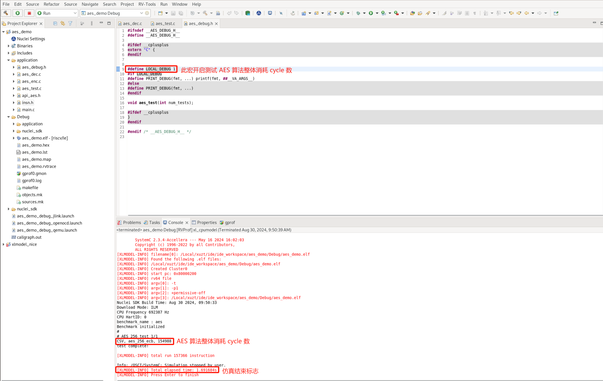
Disable LOCAL_DEBUG in aes_debug.h to remove program printouts. To measure Profiling data accurately, make sure the Nuclei Studio launch bar is set to aes_demo Debug, then Run the model again. After the run finishes, a Profiling file is generated:
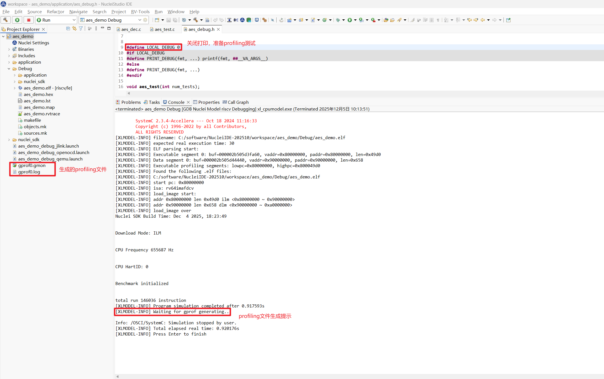
step4: Parse the gprof data¶
After the model simulation completes, double-click the generated gprof*.gmon file to open it, switch to the function view, and click % Time to sort functions by CPU usage from high to low.
Note: Time/Call shows the cycle count of each function's own body in the text section, not the cycle count of the entire function; cycles consumed by its child functions are not included.
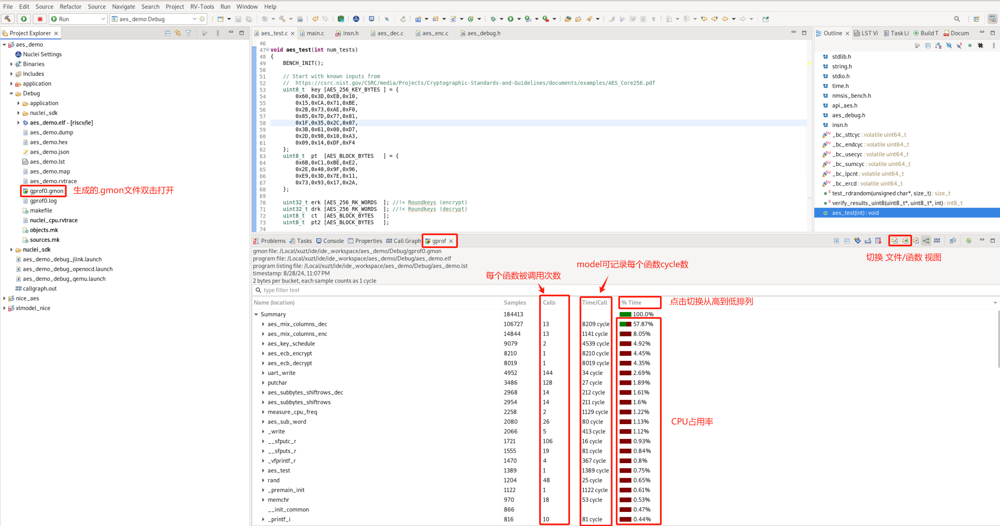
The TOP5 hotspot functions with the highest CPU usage are:
aes_mix_columns_dec
aes_mix_columns_enc
aes_key_schedule
aes_ecb_decrypt
aes_ecb_encrypt
Note: At this point, back up the current aes_demo project and rename the copy to aes_demo_nice. This way, both projects can be opened in Nuclei Studio at the same time, making it easy to compare the Profiling results of the project optimized with NICE/VNICE instructions against the original aes_demo project.
step5: Replace hotspot functions with NICE/VNICE instructions¶
In the backed-up aes_demo_nice project, the user needs to study the algorithmic characteristics of the hotspot functions and replace them with NICE/VNICE instructions to improve overall program performance.
Add #include "insn.h" to the two C files aes_dec.c and aes_dec.c, which contain the TOP5 hotspot functions of AES encryption/decryption, so that NICE/VNICE instruction replacements can be added.
The TOP1 hotspot function is aes_mix_columns_dec, which implements the inverse MixColumns of AES decryption. It takes a state matrix as input, performs the computation, and outputs the computed state matrix to the same address. It implements Load data, the inverse mix computation, and Store data. The code is as follows:
static void aes_mix_columns_dec(
uint8_t pt[16] //!< Current block state
){
// Col 0
for(int i = 0; i < 4; i ++) {
uint8_t b0,b1,b2,b3;
uint8_t s0,s1,s2,s3;
s0 = pt[4*i+0];
s1 = pt[4*i+1];
s2 = pt[4*i+2];
s3 = pt[4*i+3];
b0 = XTE(s0) ^ XTB(s1) ^ XTD(s2) ^ XT9(s3);
b1 = XT9(s0) ^ XTE(s1) ^ XTB(s2) ^ XTD(s3);
b2 = XTD(s0) ^ XT9(s1) ^ XTE(s2) ^ XTB(s3);
b3 = XTB(s0) ^ XTD(s1) ^ XT9(s2) ^ XTE(s3);
pt[4*i+0] = b0;
pt[4*i+1] = b1;
pt[4*i+2] = b2;
pt[4*i+3] = b3;
}
}
Since the input and output addresses are the same, consider replacing it with a single NICE instruction. The opcode, funct3, and funct7 of the instruction can all be customized within the encoding fields. This instruction sets opcode to Custom-0, funct3 to 0, and funct7 to 0x10. Only the rs1 register is used to describe the input parameter address; rd and rs2 are not needed. The instruction is written into insn.h with the following inline assembly:
__STATIC_FORCEINLINE void custom_aes_mix_columns_dec(uint8_t* addr)
{
int zero = 0;
asm volatile(".insn r 0xb, 0, 0x10, x0, %1, x0" : "=r"(zero) : "r"(addr));
}
The user can define a USE_NICE macro in insn.h to select whether to use NICE, and rewrite aes_mix_columns_dec in aes_dec.c as follows:
static void aes_mix_columns_dec(
uint8_t pt[16] //!< Current block state
){
#ifdef USE_NICE
custom_aes_mix_columns_dec(pt);
#else
// Col 0
for(int i = 0; i < 4; i ++) {
uint8_t b0,b1,b2,b3;
uint8_t s0,s1,s2,s3;
s0 = pt[4*i+0];
s1 = pt[4*i+1];
s2 = pt[4*i+2];
s3 = pt[4*i+3];
b0 = XTE(s0) ^ XTB(s1) ^ XTD(s2) ^ XT9(s3);
b1 = XT9(s0) ^ XTE(s1) ^ XTB(s2) ^ XTD(s3);
b2 = XTD(s0) ^ XT9(s1) ^ XTE(s2) ^ XTB(s3);
b3 = XTB(s0) ^ XTD(s1) ^ XT9(s2) ^ XTE(s3);
pt[4*i+0] = b0;
pt[4*i+1] = b1;
pt[4*i+2] = b2;
pt[4*i+3] = b3;
}
#endif
}
The TOP2 hotspot function is aes_mix_columns_enc, which, similar to TOP1, implements the inverse MixColumns of AES encryption. It likewise takes a state matrix as input, performs the computation, and outputs the computed state matrix to the same address:
static void aes_mix_columns_enc(
uint8_t ct [16] //!< Current block state
){
for(int i = 0; i < 4; i ++) {
uint8_t b0,b1,b2,b3;
uint8_t s0,s1,s2,s3;
s0 = ct[4*i+0];
s1 = ct[4*i+1];
s2 = ct[4*i+2];
s3 = ct[4*i+3];
b0 = XT2(s0) ^ XT3(s1) ^ (s2) ^ (s3);
b1 = (s0) ^ XT2(s1) ^ XT3(s2) ^ (s3);
b2 = (s0) ^ (s1) ^ XT2(s2) ^ XT3(s3);
b3 = XT3(s0) ^ (s1) ^ (s2) ^ XT2(s3);
ct[4*i+0] = b0;
ct[4*i+1] = b1;
ct[4*i+2] = b2;
ct[4*i+3] = b3;
}
}
Considering that the instruction implementation may not be achievable with a single instruction, two VNICE instructions can be used to replace this algorithm: the first one loads 16 bytes of data into a Vector register, and the second one performs the computation and the store.
The opcode, funct3, and funct7 of the instructions can still be customized within the encoding fields. The first instruction uses rd to describe the Vector register and rs1 to describe the input parameter address; the second instruction uses rs1 to describe the input parameter address and rs1 to describe the input Vector register. The inline assembly for the two VNICE instructions is written into insn.h and defined as follows:
__STATIC_FORCEINLINE vint8m1_t __custom_vnice_load_v_i8m1 (uint8_t* addr)
{
vint8m1_t rdata ;
asm volatile(".insn r 0xb,4,0,%0,%1,x0"
: "=vr"(rdata)
: "r"(addr)
);
return rdata;
}
__STATIC_FORCEINLINE void __custom_vnice_aes_mix_columns_enc_i8m1 (uint8_t *addr, vint8m1_t data)
{
int zero = 0;
asm volatile(".insn r 0xb,4,1,x0,%1,%2"
: "=r"(zero)
: "r"(addr)
, "vr"(data)
);
}
The user rewrites aes_mix_columns_enc in aes_enc.c by defining a Vector register and using the VNICE instruction inline assembly defined above, as follows:
static void aes_mix_columns_enc(
uint8_t ct [16] //!< Current block state
){
#ifdef USE_NICE
uint32_t blkCnt = 16;
size_t l;
vint8m1_t vin;
for (; (l = __riscv_vsetvl_e8m1(blkCnt)) > 0; blkCnt -= l) {
vin = __custom_vnice_load_v_i8m1(ct);
__custom_vnice_aes_mix_columns_enc_i8m1(ct, vin);
}
#else
for(int i = 0; i < 4; i ++) {
uint8_t b0,b1,b2,b3;
uint8_t s0,s1,s2,s3;
s0 = ct[4*i+0];
s1 = ct[4*i+1];
s2 = ct[4*i+2];
s3 = ct[4*i+3];
b0 = XT2(s0) ^ XT3(s1) ^ (s2) ^ (s3);
b1 = (s0) ^ XT2(s1) ^ XT3(s2) ^ (s3);
b2 = (s0) ^ (s1) ^ XT2(s2) ^ XT3(s3);
b3 = XT3(s0) ^ (s1) ^ (s2) ^ XT2(s3);
ct[4*i+0] = b0;
ct[4*i+1] = b1;
ct[4*i+2] = b2;
ct[4*i+3] = b3;
}
#endif
}
The modified program code compiles successfully: (aes_demo_nice project)
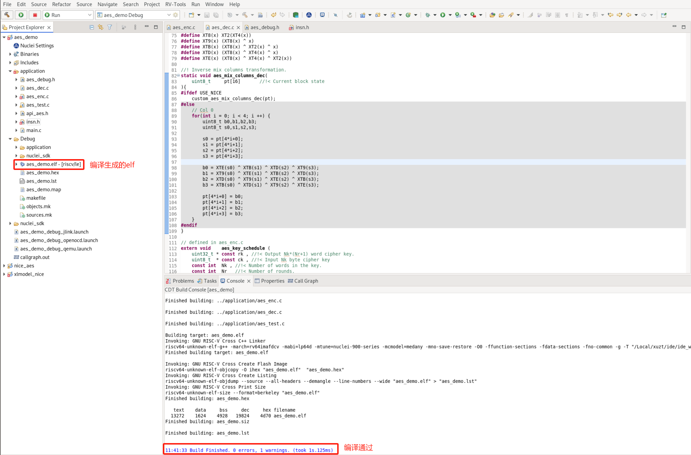
step6: Implement NICE/VNICE instructions in the Nuclei Model¶
First, download the original Nuclei Model software package that supports user-configured custom NICE/VNICE instructions: Download the original model package. Extract the package as xlmodel_nice, then import it into Nuclei Studio.
Import steps: File->Import->Projects from Folder or Archive->Next->Directory->select xlmodel_nice->Finish
For how to use the Nuclei Model and the directory structure of the xlmodel_nice package, refer to the Nuclei Model Introduction. xlmodel_nice is built with CMake and can be compiled without any modification. Before
compiling, select xlmodel_nice in the Nuclei Studio launch bar, then click Build, and make sure the package itself compiles successfully:
For Nuclei Studio (< 2025.10), the generated elf file is located at
build/default/xl_cpumodel
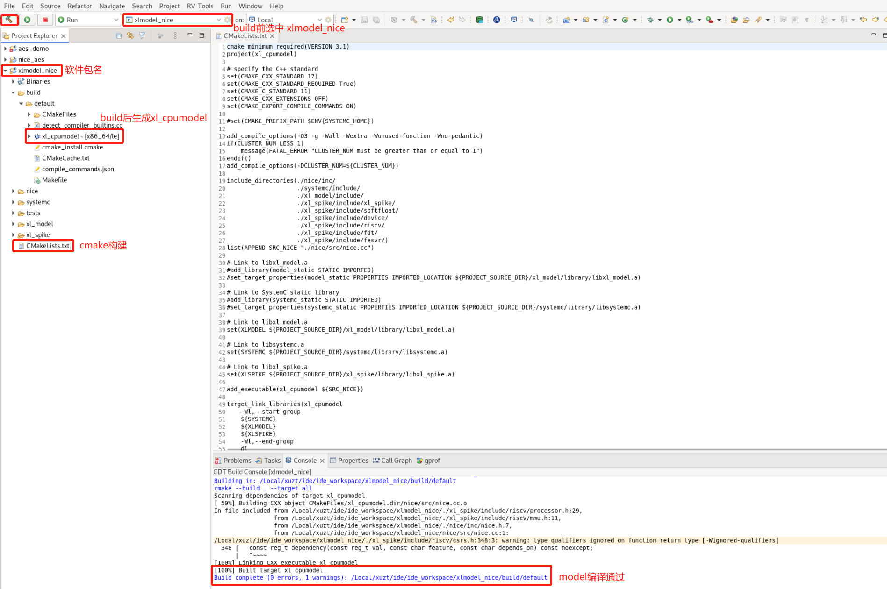
Open the nice.cc file. The user needs to implement all custom NICE/VNICE instructions in the do_nice function of this file. Currently, do_nice contains the NICE/VNICE instructions defined by Nuclei for demo_nice or demo_vnice;
the user can refer to the comments in it to complete their own custom instructions.
Note: When writing custom NICE/VNICE instructions, the user needs to disable the NUCLEI_NICE_SCALAR/NUCLEI_NICE_VECTOR macros corresponding to Nuclei's demo_nice/demo_vnice, so that they do not conflict with the encoding of the user's custom instructions.
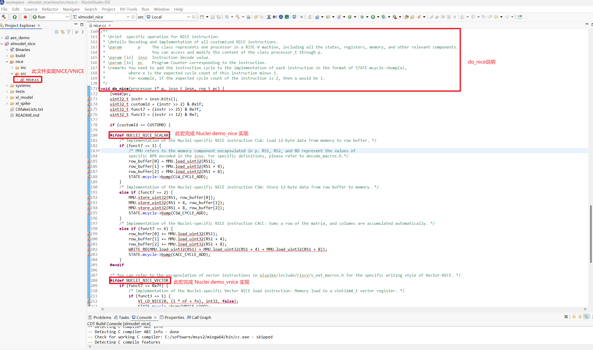
The implementation of the NICE/VNICE instructions defined in the AES demo is shown in the figure below. Conditional statements written against the instruction's opcode, funct3, and funct7 identify each instruction, within which the instruction behavior and the instruction cycle count are implemented.
In the NICE instruction implementation, the MMU macro represents memory access: use MMU.load_uint<n> to load memory and MMU.store_uint<n> to store memory. The RD, RS1, RS2, and RS3 macros represent the values in their corresponding scalar registers, and the FRS1, FRS2, and FRS3 macros represent the values in their corresponding floating-point registers. For the usage of these macros, refer to nice/inc/decode_macros.h.
In the VNICE instruction implementation, memory is still accessed with the MMU macro, but Vector register data is stored in the P.VU.elt class. The user can refer to xlspike/include/riscv/v_ext_macros.h to write the related code.
After implementing the instructions, directly specify the cycle count n required by the custom instruction: STATE.mcycle->bump(n);. Here, based on the theoretical values of implementing this algorithm in hardware with NICE/VNICE, custom_aes_mix_columns_dec is specified as 7 cycles, __custom_vnice_load_v_i8m1 as 1 cycle, and __custom_vnice_aes_mix_columns_enc_i8m1 as 2 cycles.
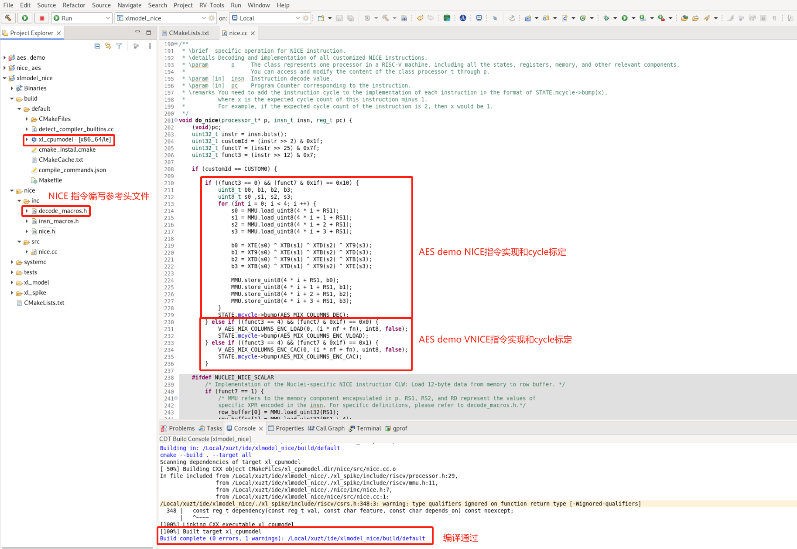
The above describes how the user adds custom NICE/VNICE instructions from the original Nuclei Model package. Next, the newly compiled model executable needs to be imported into Nuclei Studio. To avoid confusion with the name of Nuclei Studio's original model, the model can be imported into a created path such as NucleiStudio/toolchain/nucleimodel/bin_aes/. We provide two ways to obtain the model executable:
- The Nuclei model software package that implements the AES demo NICE/VNICE instructions: Model package with AES NICE instructions added. After compiling it, import the
xl_cpumodelexecutable into the above path. - A pre-compiled model executable: xl_cpumodel. Import it directly into the above path.
step7: Re-analyze the hotspot functions¶
Note: You must complete the model import described in step6 — the model implementing the NICE/VNICE instructions — into Nuclei Studio before you can use the model to Run the aes_demo_nice project.
First, open Run Configurations from the Run option in the Nuclei Studio main menu bar. A new GDB Nuclei Model riscv Debugging run configuration aes_demo_nice Debug needs to be added for the model configuration. In the Main tab, select aes_demo_nice.elf:
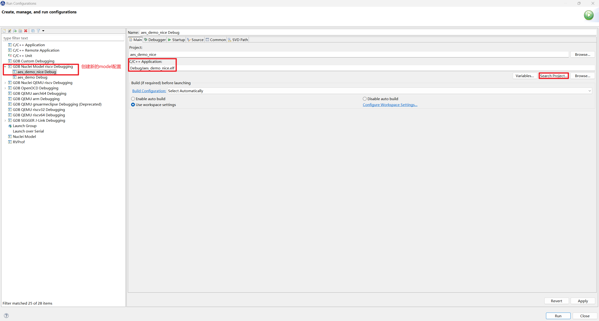
Then, in the Debugger tab, change the model Executable path to the executable path of the model newly modified in step6: .../NucleiStudio/toolchain/nucleimodel/bin_aes/xl_cpumodel:
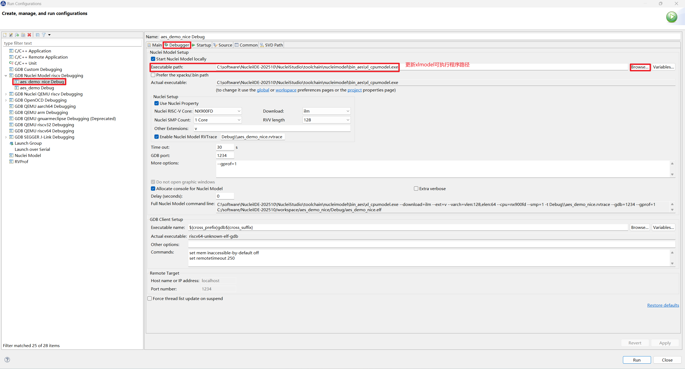
Before running, enable LOCAL_DEBUG in aes_debug.h to measure the overall cycle count of the optimized AES algorithm. Select aes_demo_nice Debug in the Nuclei Studio launch bar and Run the model. The result shows that the total cycle count of the optimized AES algorithm dropped from 161108 before optimization to 42066 cycles.
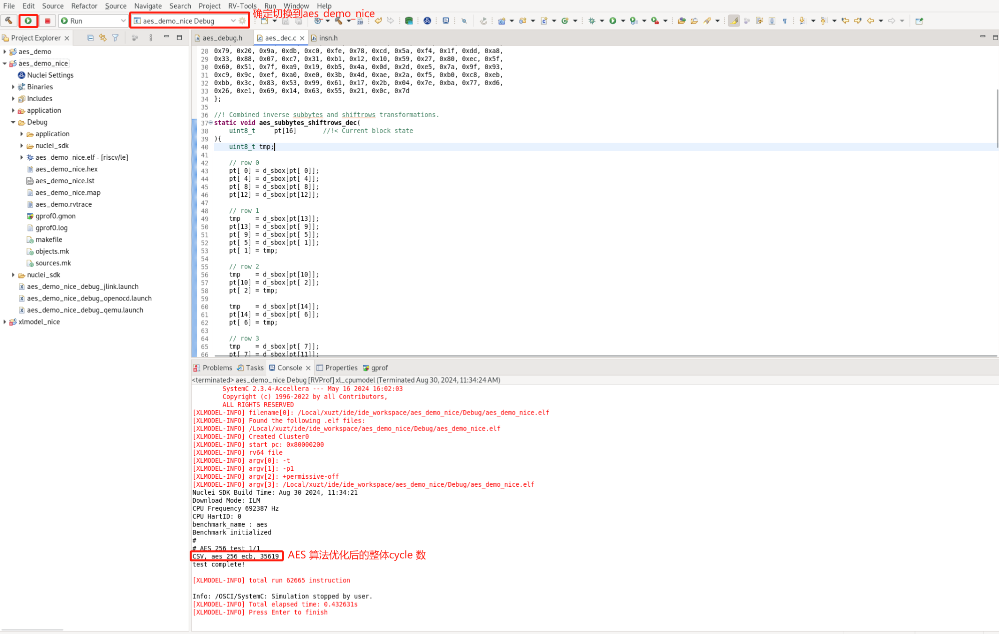
Disable LOCAL_DEBUG in aes_debug.h and Run the model again to measure Profiling data. Double-click gprof0.gmon, and you can see that aes_mix_columns_enc and aes_mix_columns_dec are no longer among the hotspot functions with high CPU usage:
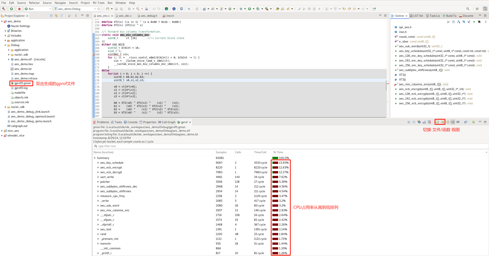
Searching for aes_mix_columns_enc and aes_mix_columns_dec, the CPU usage of aes_mix_columns_enc dropped from 8.05% to 2.93%, and that of aes_mix_columns_dec dropped from 57.87% to 0.5%. The Time per Call cycle consumption of aes_mix_columns_enc dropped from 1141 cycles to 146 cycles, and that of aes_mix_columns_dec dropped from 8209 cycles to 25 cycles. This demonstrates that replacing hotspot functions with NICE/VNICE instructions can greatly improve program algorithm performance.
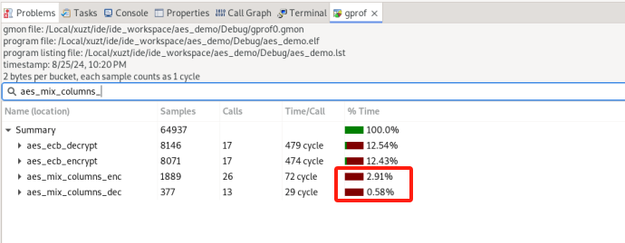
The data statistics are as follows: (enc: aes_mix_columns_enc, dec: aes_mix_columns_dec)
| Function | Before Optimization | NICE/VNICE Optimization |
|---|---|---|
CPU Usage % (enc) |
8.05 | 2.93 |
CPU Usage % (dec) |
57.87 | 0.5 |
Time per Call Cycles (enc) |
1,141 | 146 |
Time per Call Cycles (dec) |
8,209 | 25 |
| AES Program Total | Before Optimization | NICE/VNICE Optimization |
|---|---|---|
| Cycles | 161,108 | 42,066 |
AES encryption/decryption NICE/VNICE demo: Download link for the AES project after optimization